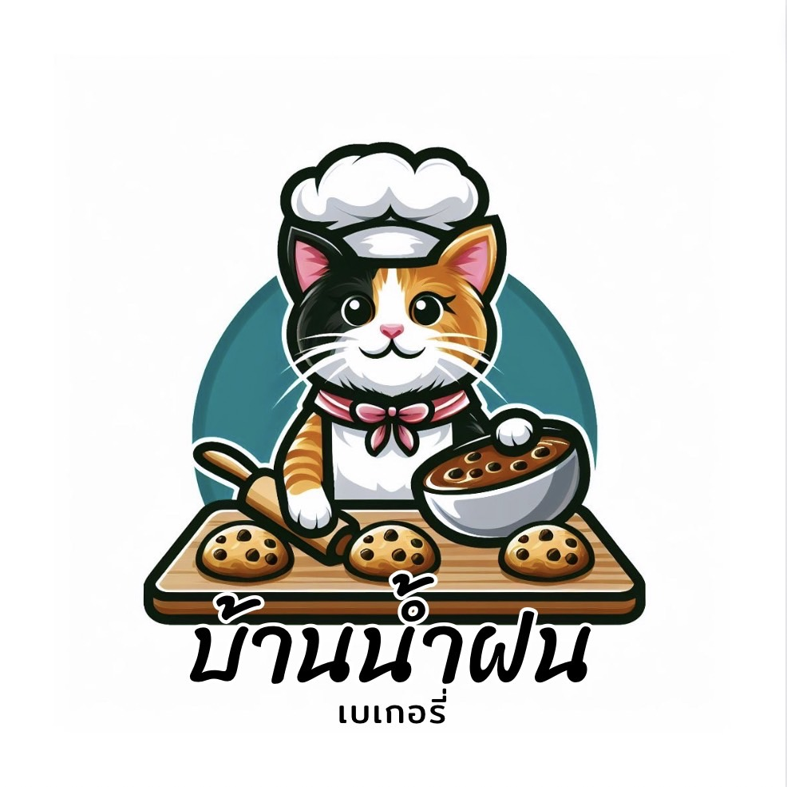

✨ อะไรที่ทำให้ Namfon Bakery โดดเด่น?
ความสดใหม่ทุกวัน: เราอบขนมใหม่ทุกวันด้วยสูตรเฉพาะที่ปรับให้เหมาะสมกับทุกความต้องการ ตั้งแต่ขนมปังนุ่มฟูไปจนถึงเค้กเนื้อแน่นหอมกรุ่น
วัตถุดิบคุณภาพสูง: ทุกส่วนผสมที่เราเลือกใช้มาจากแหล่งที่ดีที่สุด ทั้งวัตถุดิบธรรมชาติ ออร์แกนิก และปราศจากสารกันเสีย
หลากหลายเมนู: ไม่ว่าคุณจะชอบเค้ก คุกกี้ พาย ครัวซองต์ หรือขนมไทยประยุกต์ เรามีทุกอย่างที่ตอบโจทย์ความชอบของคุณ
บริการด้วยหัวใจ: ทีมงานของเราพร้อมต้อนรับด้วยรอยยิ้มและบริการที่อบอุ่น เพื่อให้คุณรู้สึกเหมือนอยู่บ้านทุกครั้งที่มาเยือน
🥐 สร้างช่วงเวลาที่น่าจดจำกับเรา ไม่ว่าคุณจะกำลังมองหาขนมสำหรับงานสำคัญ เช่น วันเกิด งานแต่งงาน หรือแม้แต่การเพิ่มความสุขในวันธรรมดา Namfon Bakery ยินดีเป็นส่วนหนึ่งในทุกโอกาสพิเศษของคุณ 🌟สั่งขนมออนไลน์ได้ง่ายๆเพื่อความสะดวกสบายของคุณ เรามีบริการสั่งขนมออนไลน์ผ่าน [แอปพลิเคชัน/เว็บไซต์ของร้าน] พร้อมบริการจัดส่งถึงหน้าบ้าน ให้คุณได้ลิ้มลองรสชาติความสุขจาก Namfon Bakery ได้ทุกที่